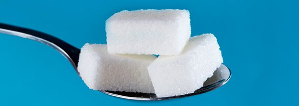

Blog de Noticias
- Alimentación balanceada
- Beneficios de frutas y verduras
- Ejercicio y metabolismo
- Suplementos nutricionales
- Hidratación y salud
¿Cuánto azúcar es bueno consumir?
El artículo de El País, basado en el libro El efecto glucosa de Diana Díaz Rizzolo, afirma que lo ideal para la salud es consumir 0 gramos de azúcar añadido al día, ya que incluso pequeñas cantidades pueden acumularse rápidamente y superar los límites recomendados por organismos como la OMS o la Asociación Americana del Corazón. Aunque no se consuma azúcar directamente, muchos alimentos comunes contienen azúcares ocultos, incluso productos considerados saludables como yogures, panes o zumos. La autora enfatiza la importancia de leer etiquetas y ser conscientes del consumo diario, ya que un menú aparentemente equilibrado puede llegar a cuadruplicar los límites saludables sin que nos demos cuenta.
En el trópico panameño abundan las frutas, no así su consumo

Aunque Panamá es un país tropical con muchas frutas disponibles durante todo el año, la población consume menos de lo recomendado por la Organización Mundial de la Salud (OMS). Mientras que la OMS sugiere un consumo de al menos 400 gramos de frutas diarias para adultos, los panameños ingieren en promedio unos 175 gramos al día. Las frutas más consumidas son el plátano (“guineo”) y la naranja, mientras que variedades como el mamey, la acerola, el jobo o la pomarrosa son poco conocidas o utilizadas.
El artículo también señala que no hay un plan nacional fuerte que promueva tanto la producción como el consumo de frutas, y que muchas se pierden en el campo. Las autoridades de salud insisten en que, aprovechar la variedad local de frutas es importante por los beneficios nutricionales: vitaminas, minerales, fibra, antioxidantes y protección frente a enfermedades como las cardiovasculares, el cáncer y la diabetes.
Efecto del ayuno intermitente en tu cabello
Un estudio realizado en roedores por investigadores de la Universidad de Westlake (China) sugiere que el ayuno intermitente, aunque tiene beneficios metabólicos y ayuda a perder grasa, podría tener un efecto secundario inesperado: ralentizar el crecimiento del cabello. Durante los periodos de ayuno, se liberan ácidos grasos que las células madre del folículo capilar no pueden procesar correctamente, lo que provoca estrés oxidativo y dificulta la regeneración del pelo.
Los investigadores también descubrieron que este efecto negativo se reducía al administrar antioxidantes como la vitamina E, lo que sugiere una posible forma de mitigar el daño. Aunque los hallazgos son prometedores, el estudio aún no se ha probado en humanos, por lo que se recomienda precaución y consultar con un especialista antes de adoptar dietas de ayuno intermitente de forma prolongada.